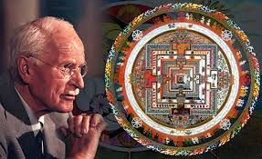
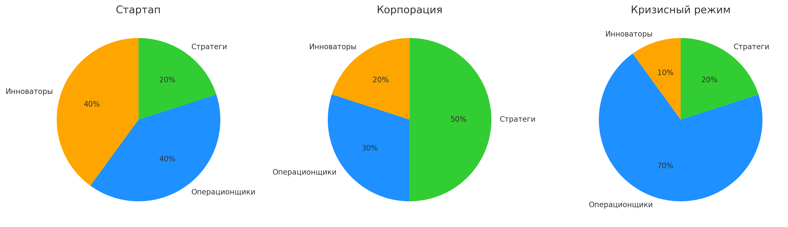
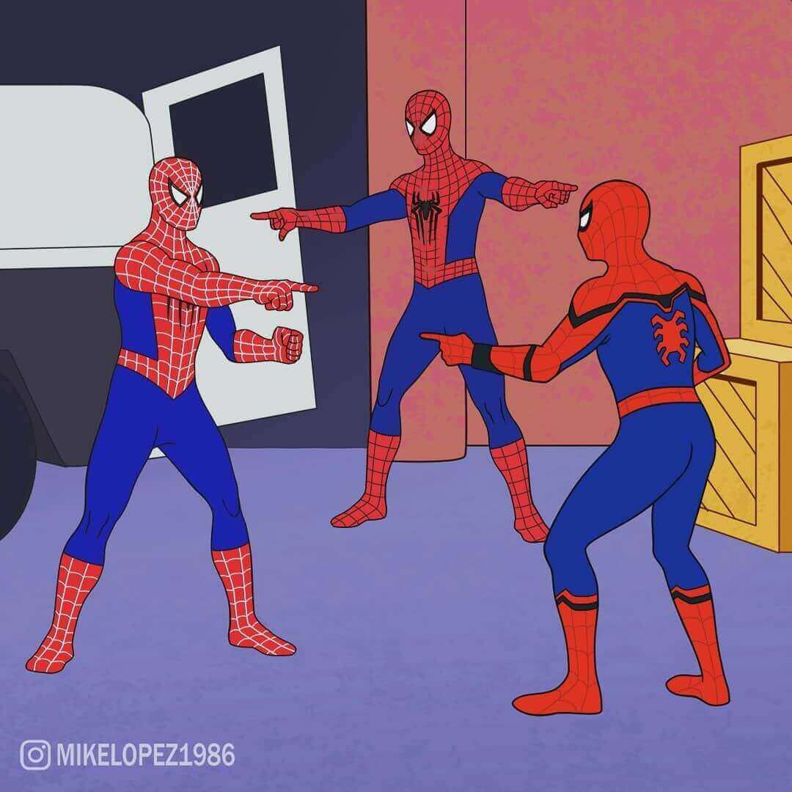
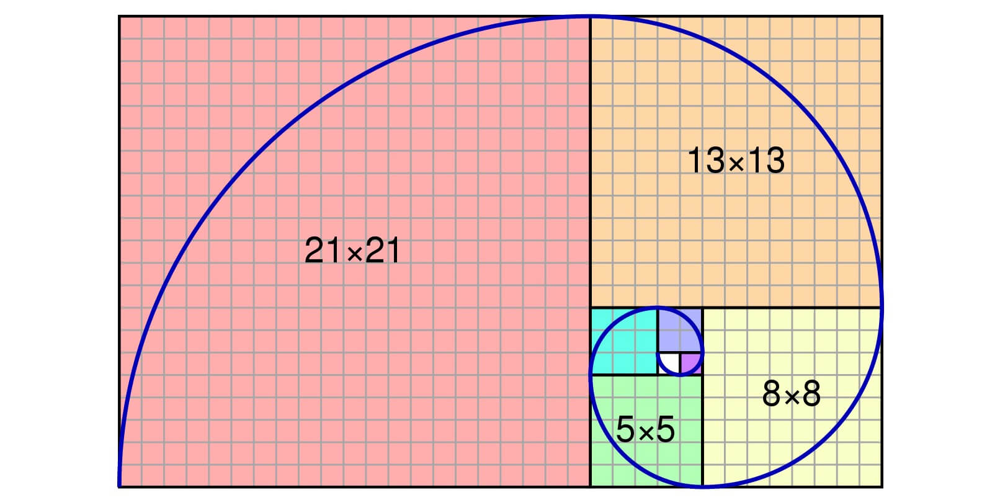
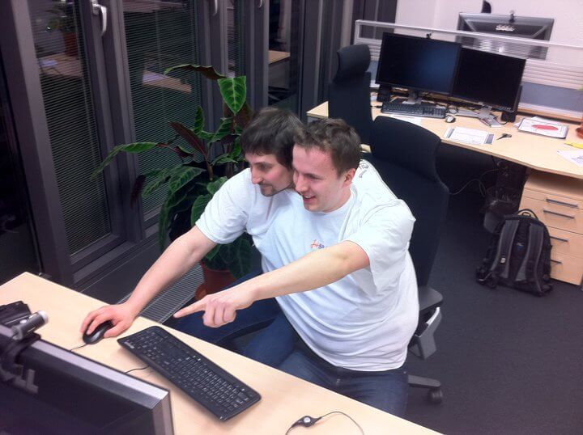
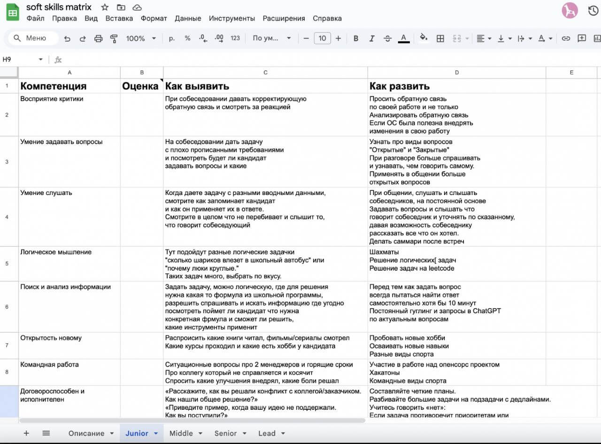

Тимлиды как управленческая система: от хаоса к согласованности
Тимлиды как управленческая система: от хаоса к согласованности
Андрей Смирнов @itsmirnov
Кто я?
Дисклеймер
🙊 Моё личное мнение
🤷🏻 Основанное на собственном опыте
Главная проблема: 5 лидов = 5 вселенных
Чем это вредит бизнесу?
🔁 Противоречащие технические решения
⚔️ Конфликты за ресурсы и приоритеты
🧱 Дублирование усилий (увеличиваются затраты)
Решение: сбалансированная команда
План доклада
🔍 Диагностика дисбаланса
⚖️ Добавление недостающего элемента
🧭 Синхронизация, чтобы заработала система
🧪 С чего начать внедрение
План доклада
🔍 Диагностика дисбаланса
⚖️ Добавление недостающего элемента
🧭 Синхронизация, чтобы заработала система
🧪 С чего начать внедрение
3 ключевых архетипа лидов

Стратег (Проактивный)
🎯 Фокус: долгосрочное видение
🔮 Сила: предвидение трендов
🌫 Риск: отрыв от реальности
📈 Добавляйте при масштабировании
Операционщик (Реактивный)
🔧 Фокус: тактические задачи
⚡ Сила: скорость реакции
🔥 Риск: «тушение пожаров»
⚠️ Важно: Не более половины команды
Инноватор (Креативный)
💡 Фокус: прорывные решения
🎇 Сила: генерация идей
🚫 Риск: игнорирование рисков
📊 Полезен, если составляет 20% от численности
Как использовать сильные стороны
🚀 Операционщика → на запуск новых продуктов
📅 Стратега → на долгосрочное планирование
🔬 Инноватора → на R&D-направления
🏋️ Назначайте по силам, а не по шаблону
Зависит от типа компании

Технический баланс
Проверьте пропорции
👨💻 Технические гуру: держат руку на пульсе кода
👥 People-менеджеры: развивают команды
🎯 Идеал: 60/40 в зависимости от продукта
Важно: не создавайте своих клонов!

Почему баланс критически важен?
Кейс: Команда только из Стратегов
⚠️ Проблема: великие планы, нулевое исполнение
🧩 Решение: добавили 2 Операционщиков
📈 Результат: реализация инициатив выросла в 1,5 раза
Сбалансированные лиды разных команд не дополнят друг друга
План доклада
🔍 Диагностика дисбаланса
⚖️ Добавление недостающего элемента
🧭 Синхронизация, чтобы заработала система
🧪 С чего начать внедрение
Два пути: вырастить или нанять
Выращиваем внутри
Плюсы
Риски
Знание культуры и процессов
«Замыленность» взгляда
Лояльность и доверие команды
Проблемы с авторитетом («равный»)
Понимание исторического контекста
Недостаток свежих идей
Нанять извне
Плюсы
Риски
Свежий взгляд на проблемы
Долгая адаптация (3-6 мес.)
Опыт из других индустрий
Конфликт культур
Нет исторических обязательств
Ошибки в оценке реальных навыков
Золотая середина: 70/30

Кого повышать: ключевые критерии
🧠 Стратегическое мышление > тактическое
🔭 Долгосрочное видение (>1 года)
🌱 Умение развивать других лидеров
План доклада
🔍 Диагностика дисбаланса
⚖️ Добавление недостающего элемента
🧭 Синхронизация, чтобы заработала система
🧪 С чего начать внедрение
Что объединяет разных лидов?
Техническая стратегия как компас
📏 Пример: единые стандарты разработки
🧠 Как внедрять: стратегические сессии
📊 Формат: декомпозиция до конкретных KPI/OKR
Стратсессии: как это работает?

Структура стратсессии (пример)
📍 День 1. Анализ текущих проблем
🧱 День 2. Формирование принципов
🛤 День 3. Создание roadmap с метриками
✅ Результат: принятые всеми «правила игры»
Система ротации лидов
Как внедрять ротацию
📆 Правило 1. Не чаще 1 раза в 6 мес.
🎯 Правило 2. Четкие KPI на период
💬 Правило 3. Обязательный фидбэк
🌐 Результат: заметно растёт кросс-командное понимание
Менторство: не для галочки
Рабочая схема менторства
🔍 Анализ слабых зон лида
🤝 Подбор комплементарного ментора
🎯 Четкие цели на 3 месяца
План доклада
🔍 Диагностика дисбаланса
⚖️ Добавление недостающего элемента
🧭 Синхронизация, чтобы заработала система
🧪 С чего начать внедрение
Шаг 1. Аудит команды
🧬 Диагностика: какие архетипы у вас есть?
🔍 Анализ пробелов: нет Технарей? одни Операционщики?
📊 Инструмент: матрица компетенций
Матрица компетенций (пример)

Шаг 2. Закрываем пробелы
🅰️ Найм недостающего типа
🅱️ Развитие существующих лидов
⚖️ Критерий выбора: Срочность vs Долгосрочность
План развития лида (пример)
Шаг 3. Внедряем инструменты синхронизации
📅 Обязательные: еженедельные sync-митапы
📊 Стратегические: квартальные стратсессии
🌀 Культурные: ротация между командами
Результаты внедрения
Что изменилось
⚡ Выросла скорость принятия решений
☮️ Снизилось количество конфликтов между командами
🧲 Увеличился срок работы лидов
⏳ Но потрачена уйма времени
Не бойтесь настраивать под себя!
Интуиция = неосознанная компетентность
Спасибо! Ваши вопросы?
@itsmirnov